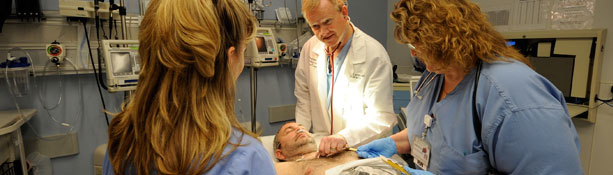

- Professional Development
- Career Opportunities
- Scholarships
Career Opportunities

West Penn Allegheny Health System (WPAHS) is one of Pittsburgh's leading medical teaching facilities and has attracted medical students from across the country.
We at the West Penn Allegheny Health System Clinical Campus are proud of our affiliations with Liaison Committee for Medical Education (LCME) and American Osteopathic Association (AOA) approved medical schools across the United States and Canada.
Allegheny Health System has a long history of excellence in graduate medical education (GME). Since 2009, the sponsoring institution for GME programs has been the Allegheny General Hospital - Western Pennsylvania Hospital Medical Education Consortium. - See more at: http://www.wpahs.org/education